About DOK Talks
This conference is for enriching women's lives by talking about feelings that sometimes can be hard to express and to have a deeper connection between all women.Our goal is to create a community trust within women.Where God can take us knowing that we can be open,honest,and unified somewhere to be vulnerable.The fearless female's journey is not without fear - it is about leaping into the fear,embracing change and becoming stronger through every challenge.Our goal is to inspire and be inspired and to light someone's candle along the way.
Speakers
Donna Sutton
Donna Sutton is our dedicated pastor’s wife. She takes time to emotionally invest in her and her husband’s congregation, New Life Church in Birmingham, AL. Moving from Louisiana to Birmingham, AL in 1987 with three small children, Sis. Sutton knows all too well the many roles a woman, wife and mother play within a family. She is a phenomenal example of how a woman of God should behave in all circumstances. Other than ministering alongside her husband, Pastor Barry Sutton, she loves sweets, traveling and spending time with her grandchildren.

 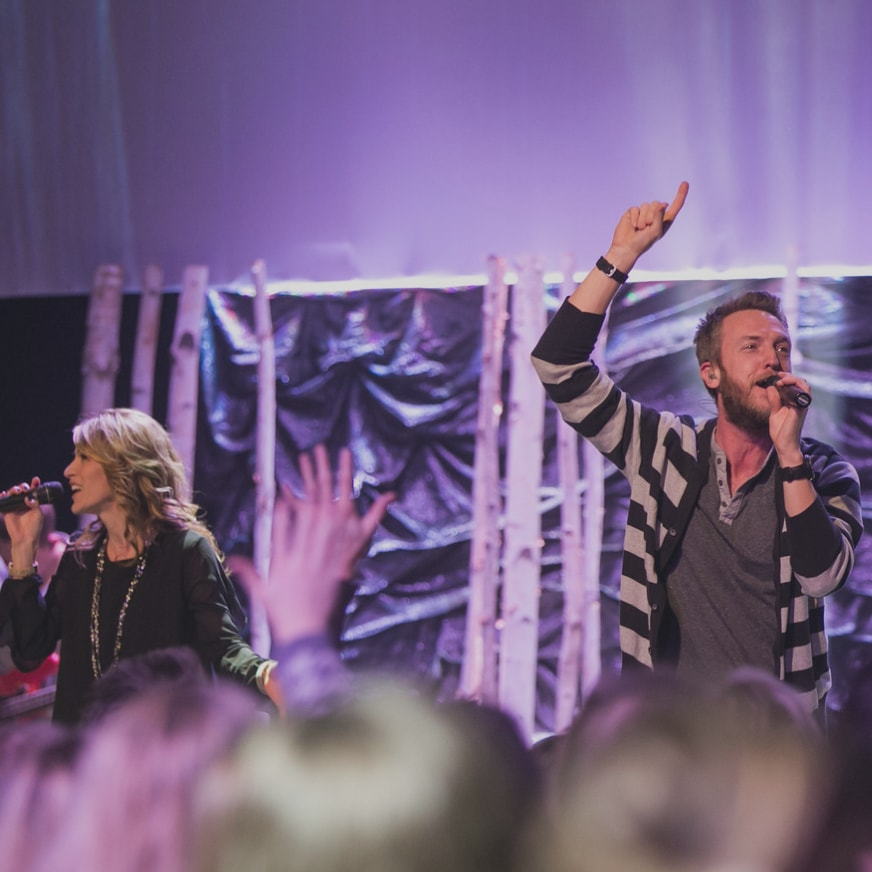
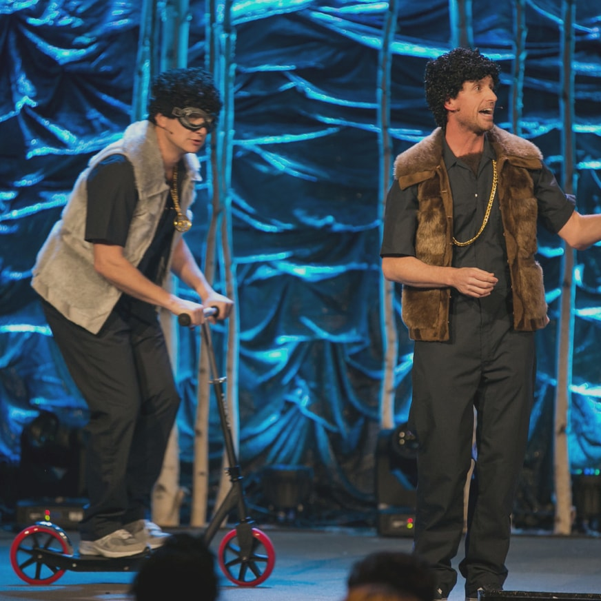
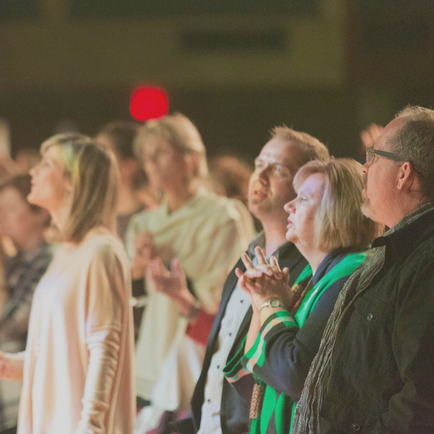
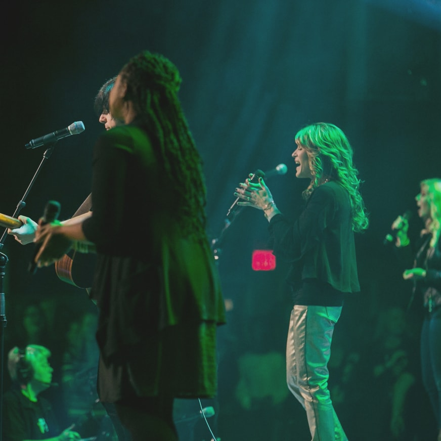
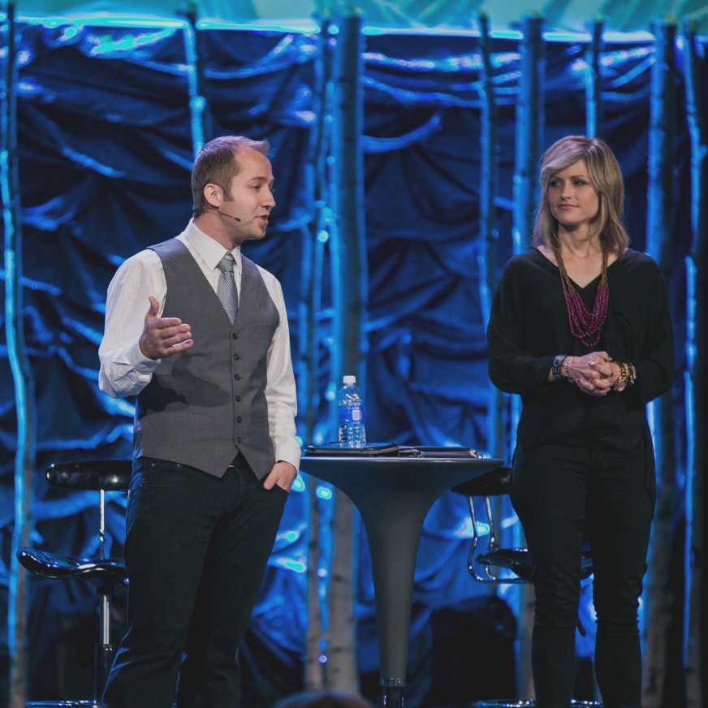
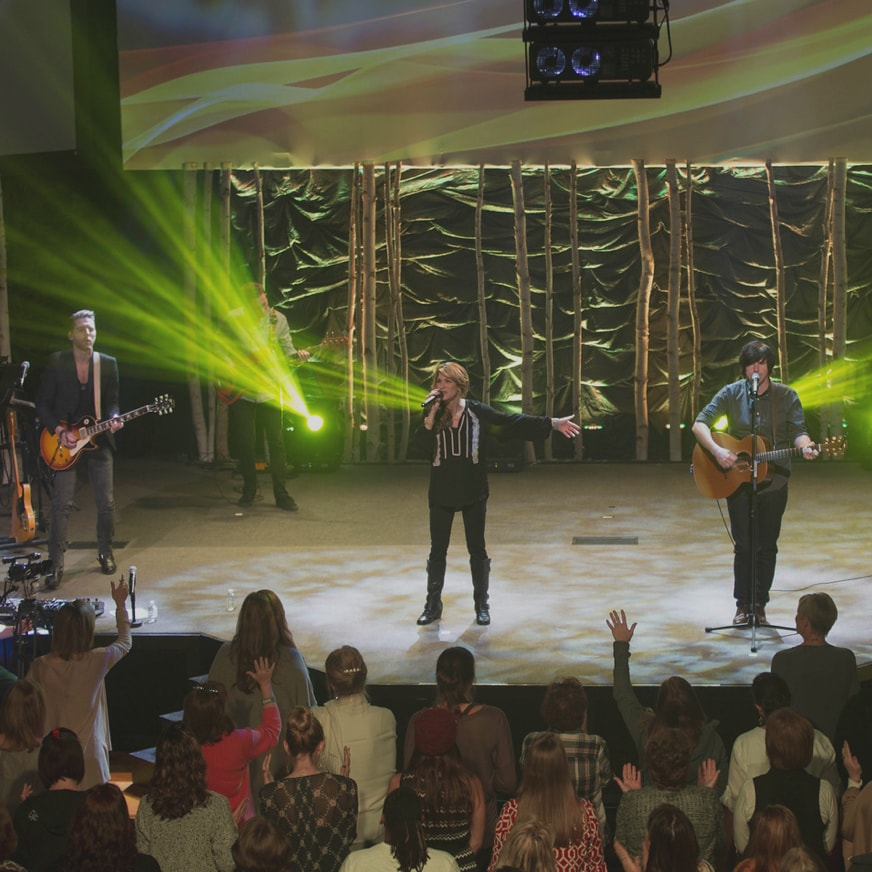
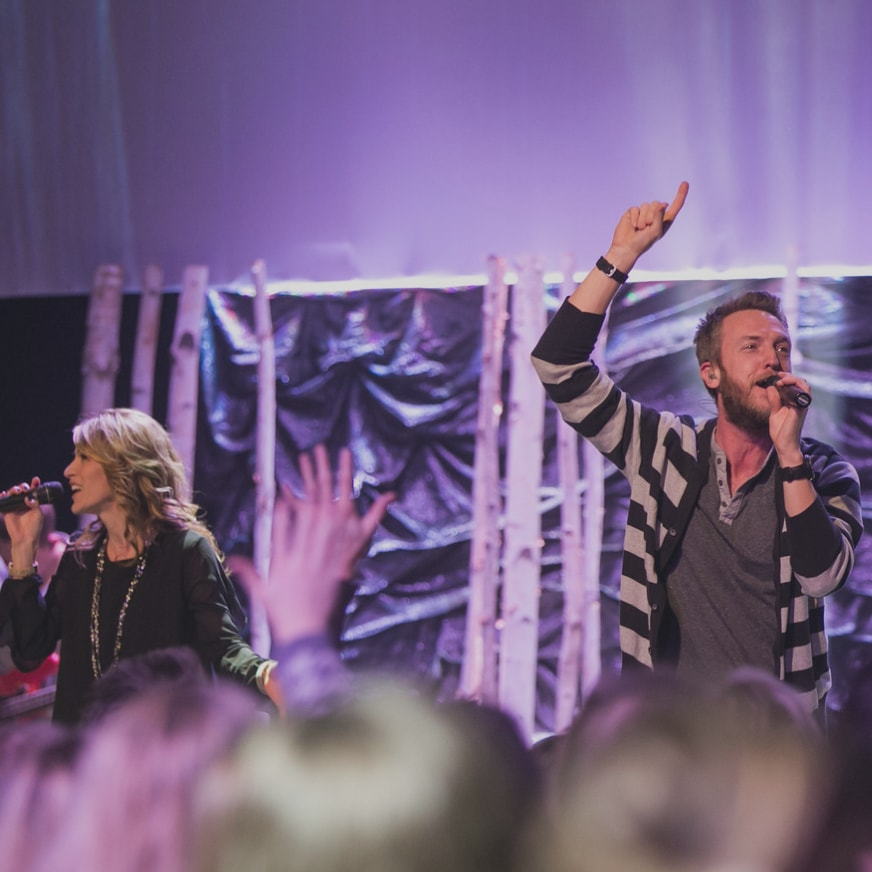
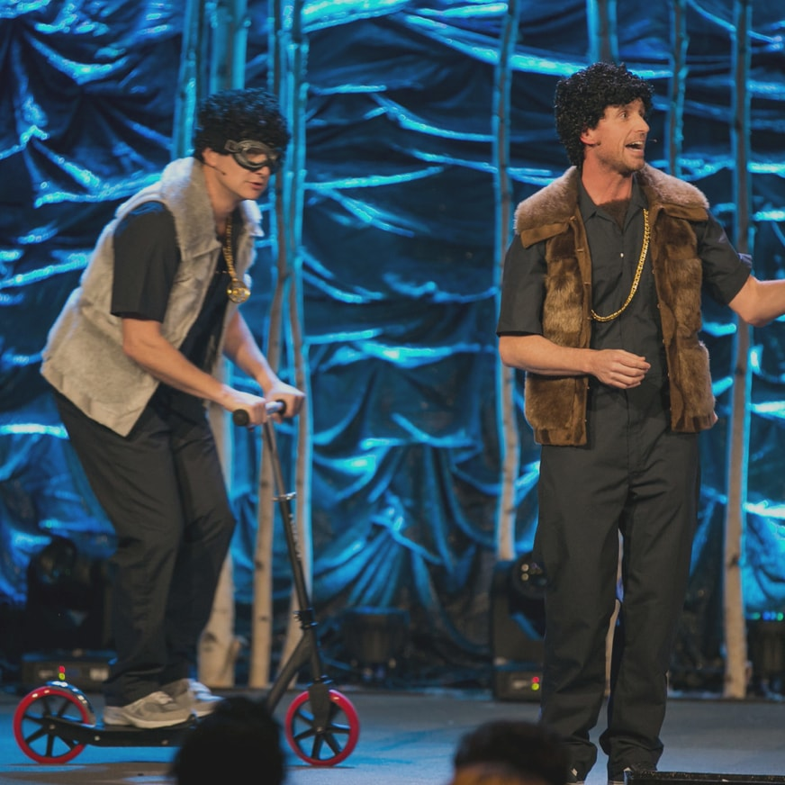
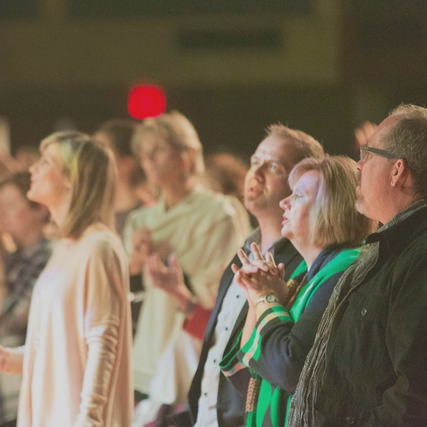
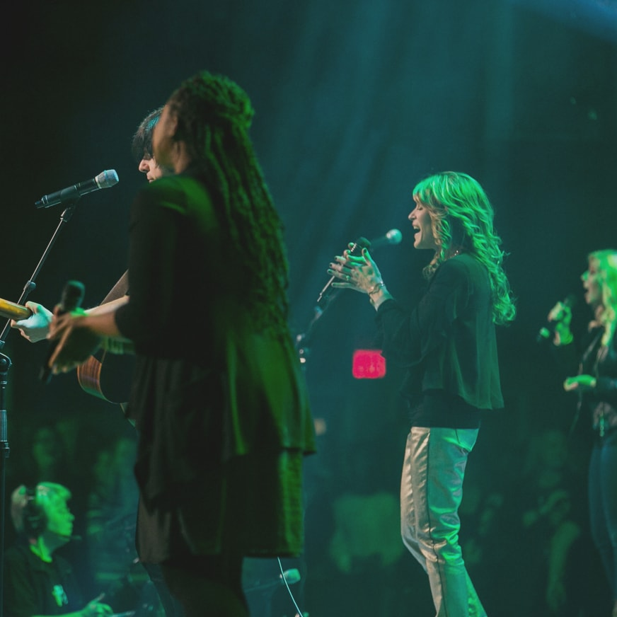
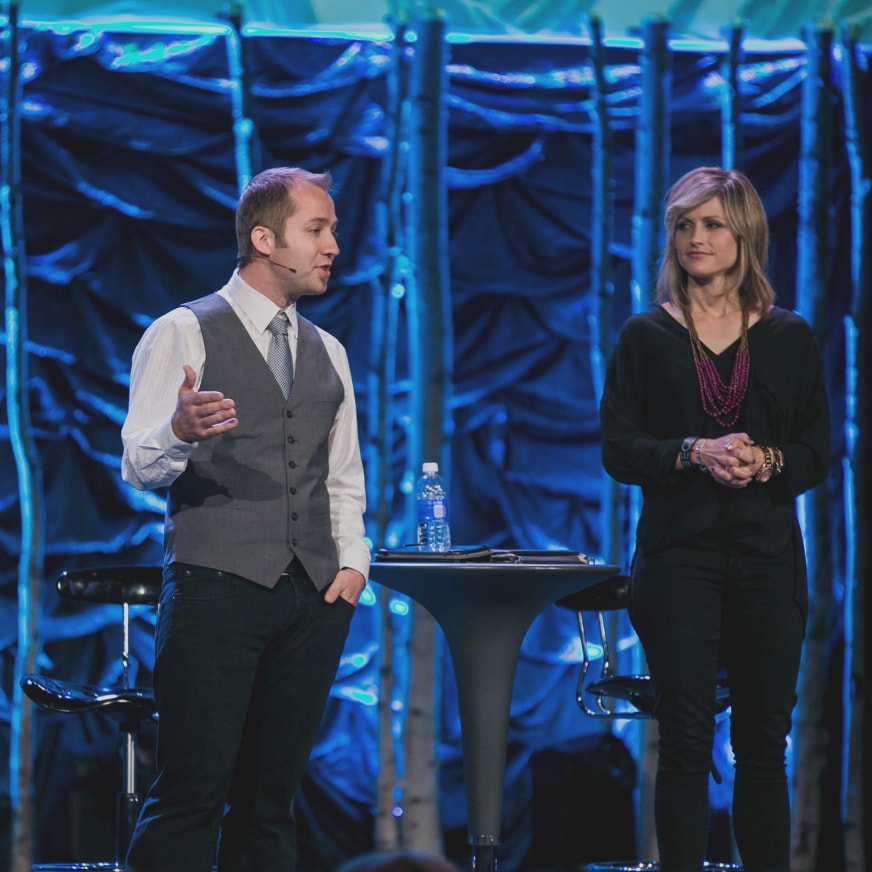
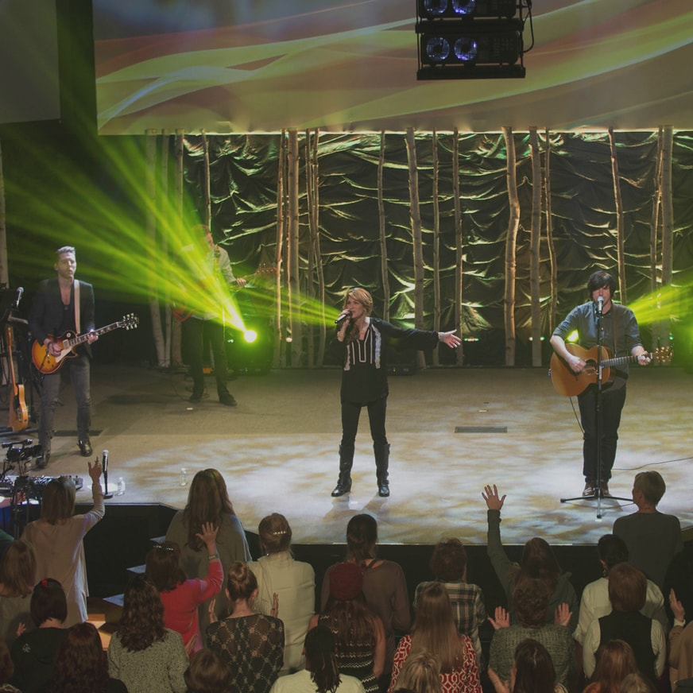